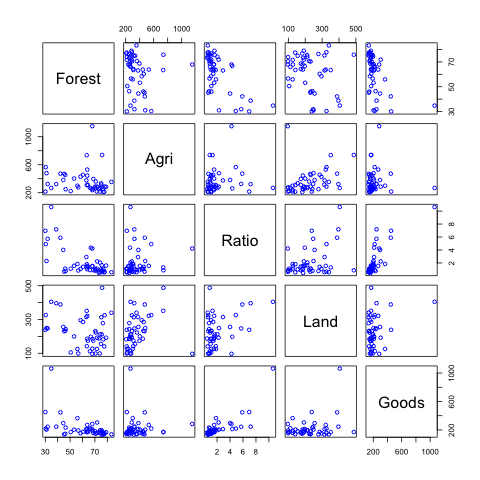
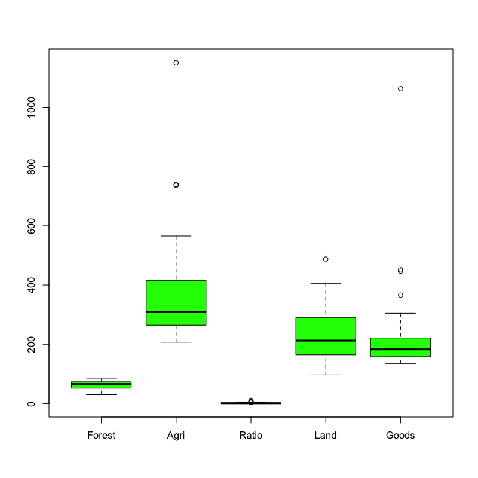
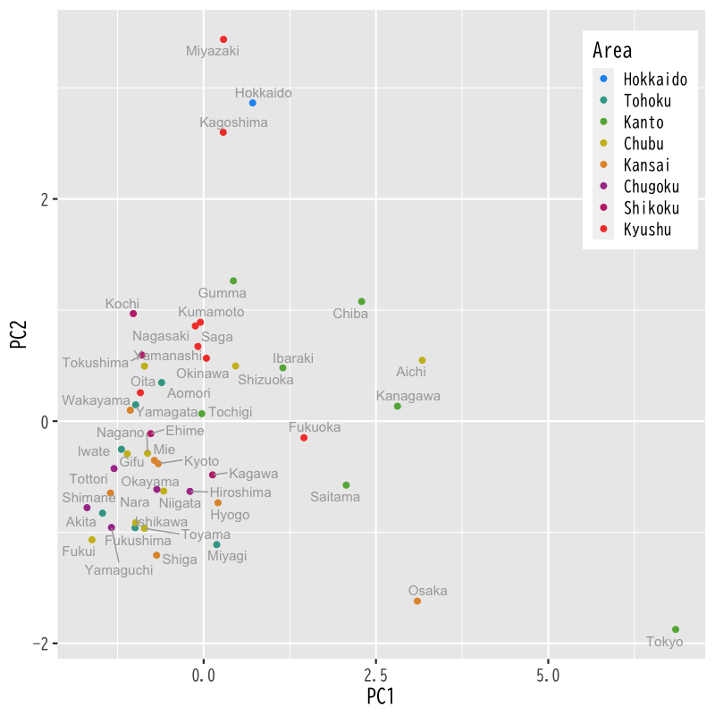

主成分分析
基本的な考え方
(Press ? for help, n and p for next and previous slide)
講義の内容
- 第1日 : 主成分分析の考え方
- 第2日 : 分析の評価と視覚化
主成分分析の考え方
主成分分析
- 多数の変量のもつ情報の分析・視覚化
- 変量を効率的に縮約して少数の特徴量を構成する
- 特徴量に関与する変量間の関係を明らかにする
- PCA (Principal Component Analysis)
- 構成する特徴量 : 主成分 (princial component)
分析の枠組み
- \(X_{1},\dotsc,X_{p}\) : 変数 (確率変数として扱っている)
- \(Z_{1},\dotsc,Z_{d}\) : 特徴量 ( \(d\leq p\) )
変数と特徴量の関係 (線形結合)
\begin{equation} Z_k=a_{1k}X_{1}+\cdots+a_{pk}X_{p}\quad(k=1,\dotsc,d) \end{equation}特徴量は定数倍の任意性があるので以下を仮定
\begin{equation} \|\boldsymbol{a}_k\|^2=\sum_{j=1}^pa_{jk}^2=1 \end{equation}
主成分分析の用語
- 特徴量 \(Z_k\)
- 第 \(k\) 主成分
- 第 \(k\) 主成分得点 (principal component score)
- 係数ベクトル \(\boldsymbol{a}_k\)
- 第 \(k\) 主成分負荷量 (principal component loading)
- 第 \(k\) 主成分方向 (principal component direction)
分析の目的
目的
主成分得点 \(Z_{1},\dots,Z_{d}\) が変数 \(X_{1},\dotsc,X_{p}\) の情報を効率よく反映するように主成分負荷量 \(\boldsymbol{a}_{1},\dotsc,\boldsymbol{a}_{d}\) を観測データから うまく 決定する
- 分析の方針 (以下は同値)
- データの情報を最も保持する変量の 線形結合を構成
- データの情報を最も反映する 座標軸を探索
- 教師なし学習 の代表的手法の1つ
- 次元縮約 : 入力をできるだけ少ない変数で表現
- 特徴抽出 : 情報処理に重要な特性を変数に凝集
第1主成分の計算
記号の準備
- 変数 : \(x_{1},\dotsc,x_{p}\) (p次元)
観測データ : \(n\) 個の \((x_{1},\dotsc,x_{p})\) の組
\begin{equation} \{(x_{i1},\dots,x_{ip})\}_{i=1}^n \end{equation}- ベクトル表現
- \(\boldsymbol{x}_{i}=(x_{i1},\dots,x_{ip})^{\mathsf{T}}\) : \(i\) 番目の観測データ (\(p\) 次元空間内の1点)
- \(\boldsymbol{a}=(a_{1},\dots,a_{p})^{\mathsf{T}}\) : 長さ1の \(p\) 次元ベクトル
係数ベクトルによる射影
データ \(\boldsymbol{x}_{i}\) の \(\boldsymbol{a}\) 方向成分の長さ
\begin{equation} \boldsymbol{a}^{\mathsf{T}}\boldsymbol{x}_{i} \quad\text{(スカラー)} \end{equation}方向ベクトル \(\boldsymbol{a}\) をもつ直線上への点 \(\boldsymbol{x}_{i}\) の直交射影
\begin{equation} (\boldsymbol{a}^{\mathsf{T}}\boldsymbol{x}_{i})\,\boldsymbol{a} \quad\text{(スカラー \(\times\) ベクトル)} \end{equation}
幾何学的描像

Figure 1: 観測データの直交射影 (\(p=2,n=2\) の場合)
ベクトル \(\boldsymbol{a}\) の選択の指針
射影による特徴量の構成
ベクトル \(\boldsymbol{a}\) を うまく 選んで 観測データ \(\boldsymbol{x}_{1},\dots,\boldsymbol{x}_n\) の情報を最も保持する1変量データを構成
\begin{equation} \boldsymbol{a}^{\mathsf{T}}\boldsymbol{x}_{1}, \boldsymbol{a}^{\mathsf{T}}\boldsymbol{x}_2, \dotsc, \boldsymbol{a}^{\mathsf{T}}\boldsymbol{x}_n \end{equation}特徴量のばらつきの最大化
観測データの ばらつき を最も反映するベクトル \(\boldsymbol{a}\) を選択
\begin{equation} \arg\max_{\boldsymbol{a}} \sum_{i=1}^n(\boldsymbol{a}^{\mathsf{T}}\boldsymbol{x}_{i} -\boldsymbol{a}^{\mathsf{T}}\bar{\boldsymbol{x}})^2, \quad \bar{\boldsymbol{x}} = \frac{1}{n}\sum_{i=1}^n\boldsymbol{x}_{i}, \end{equation}
ベクトル \(\boldsymbol{a}\) の最適化
最適化問題
制約条件 \(\|\boldsymbol{a}\|=1\) の下で 以下の関数を最大化せよ
\begin{equation} f(\boldsymbol{a}) = \sum_{i=1}^n(\boldsymbol{a}^{\mathsf{T}}\boldsymbol{x}_{i} -\boldsymbol{a}^{\mathsf{T}}\bar{\boldsymbol{x}})^2 \end{equation}- この最大化問題は必ず解をもつ
- \(f(\boldsymbol{a})\) は連続関数
- 集合 \(\{\boldsymbol{a}\in\mathbb{R}^p:\|\boldsymbol{a}\|=1\}\) はコンパクト(有界閉集合)
演習
問題
- 以下の問に答えなさい
評価関数 \(f(\boldsymbol{a})\) を以下の中心化したデータ行列で表しなさい
\begin{equation} X = \begin{pmatrix} \boldsymbol{x}_{1}^{\mathsf{T}}-\bar{\boldsymbol{x}}^{\mathsf{T}} \\ \vdots \\ \boldsymbol{x}_{n}^{\mathsf{T}}-\bar{\boldsymbol{x}}^{\mathsf{T}} \end{pmatrix} = \begin{pmatrix} x_{11}-\bar{x}_{1} & \cdots & x_{1p}-\bar{x}_{p}\\ \vdots & & \vdots \\ x_{n1}-\bar{x}_{1} & \cdots & x_{np}-\bar{x}_{p} \end{pmatrix} \end{equation}上の結果を用いて次の最適化問題の解の条件を求めなさい
\begin{equation} \text{maximize}\quad f(\boldsymbol{a}) \quad\text{s.t.}\quad \boldsymbol{a}^{\mathsf{T}}\boldsymbol{a}=1 \end{equation}
第1主成分の解
ベクトル \(\boldsymbol{a}\) の解
最適化問題
\begin{equation} \text{maximize}\quad f(\boldsymbol{a}) = \boldsymbol{a}^{\mathsf{T}}X^{\mathsf{T}}X\boldsymbol{a} \quad\text{s.t.}\quad \boldsymbol{a}^{\mathsf{T}}\boldsymbol{a}=1 \end{equation}固有値問題
\(f(\boldsymbol{a})\) の極大値を与える \(\boldsymbol{a}\) は \(X^{\mathsf{T}}X\) の固有ベクトルとなる
\begin{equation} X^{\mathsf{T}}X\boldsymbol{a} = \lambda\boldsymbol{a} \end{equation}
第1主成分
固有ベクトル\(\boldsymbol{a}\)に対する\(f(\boldsymbol{a})\) は行列 \(X^{\mathsf{T}}X\) の固有値
\begin{equation} f(\boldsymbol{a}) =\boldsymbol{a}^{\mathsf{T}}X^{\mathsf{T}}X\boldsymbol{a} =\boldsymbol{a}^{\mathsf{T}}\lambda\boldsymbol{a} =\lambda \end{equation}- 求める \(\boldsymbol{a}\) は行列 \(X^{\mathsf{T}}X\) の最大固有ベクトル (長さ1)
- 第1主成分負荷量 : ベクトル \(\boldsymbol{a}\)
第1主成分得点 :
\begin{equation} z_{i1} =a_{1}x_{i1}+\cdots+a_{p}x_{ip} =\boldsymbol{a}^{\mathsf{T}}\boldsymbol{x}_{i}, \quad(i=1,\dots,n) \end{equation}
Gram 行列の性質
Gram 行列の固有値
- \(X^{\mathsf{T}}X\) は非負定値対称行列
- \(X^{\mathsf{T}}X\) の固有値は0以上の実数
固有値を重複を許して降順に並べる
\begin{equation} \lambda_{1}\geq\dotsb\geq\lambda_{p}\quad(\geq0) \end{equation}固有値 \(\lambda_{k}\) に対する固有ベクトルを \(\boldsymbol{a}_{k}\)(長さ1)とする
\begin{equation} \|\boldsymbol{a}_{k}\|=1, \quad (k=1,\dotsc,p) \end{equation}
Gram 行列のスペクトル分解
\(\boldsymbol{a}_{1},\dotsc,\boldsymbol{a}_{p}\) は 互いに直交 するようとることができる
\begin{equation} j\neq k \quad\Rightarrow\quad \boldsymbol{a}_{j}^{\mathsf{T}}\boldsymbol{a}_k=0 \end{equation}行列 \(X^{\mathsf{T}}X\) (非負定値対称行列) のスペクトル分解
\begin{align} X^{\mathsf{T}}X &=\lambda_{1}\boldsymbol{a}_{1}\boldsymbol{a}_{1}^{\mathsf{T}}+ \lambda_{2}\boldsymbol{a}_{2}\boldsymbol{a}_{2}^{\mathsf{T}}+ \dotsb+\lambda_{p}\boldsymbol{a}_{p}\boldsymbol{a}_{p}^{\mathsf{T}}\\ &=\sum_{k=1}^{p}\lambda_{k}\boldsymbol{a}_{k}\boldsymbol{a}_{k}^{\mathsf{T}} \end{align}固有値と固有ベクトルによる行列の表現
演習
問題
- 以下の問に答えなさい
Gram 行列のスペクトル分解において \(\lambda_{j}\) と \(\boldsymbol{a}_{j}\) が固有値・固有ベクトルとなることを確かめなさい
\begin{equation} X^{\mathsf{T}}X =\sum_{k=1}^{p}\lambda_{k}\boldsymbol{a}_{k}\boldsymbol{a}_{k}^{\mathsf{T}} \end{equation}以下の行列を用いて Gram 行列のスペクトル分解を書き直しなさい
\begin{equation} A = \begin{pmatrix} \boldsymbol{a}_{1}^{\mathsf{T}}\\ \vdots \\ \boldsymbol{a}_{p}^{\mathsf{T}} \end{pmatrix}, \quad \Lambda = \begin{pmatrix} \lambda_{1} & 0 & \dotsm & 0\\ 0 & \lambda_{2} & \dotsm & 0\\ 0 & 0 & \ddots & 0\\ 0 & 0 & \dotsm & \lambda_{p}\\ \end{pmatrix} \end{equation}
第2主成分以降の計算
第2主成分の考え方
- 第1主成分
- 主成分負荷量 : ベクトル \(\boldsymbol{a}_{1}\)
- 主成分得点 : \(\boldsymbol{a}_{1}^{\mathsf{T}}\boldsymbol{x}_{i}\) (\(i=1,\dotsc,n\))
第1主成分負荷量に関してデータが有する情報
\begin{equation} (\boldsymbol{a}_{1}^{\mathsf{T}}\boldsymbol{x}_{i})\,\boldsymbol{a}_{1} \quad(i=1,\dotsc,n) \end{equation}第1主成分を取り除いた観測データ (分析対象)
\begin{equation} \tilde{\boldsymbol{x}}_{i} = \boldsymbol{x}_{i} -(\boldsymbol{a}_{1}^{\mathsf{T}}\boldsymbol{x}_{i})\,\boldsymbol{a}_{1} \quad(i=1,\dotsc,n) \end{equation}
第2主成分の最適化
最適化問題
制約条件 \(\|\boldsymbol{a}\|=1\) の下で 以下の関数を最大化せよ
\begin{equation} \tilde{f}(\boldsymbol{a}) = \sum_{i=1}^n(\boldsymbol{a}^{\mathsf{T}}\tilde{\boldsymbol{x}}_{i} -\boldsymbol{a}^{\mathsf{T}}\bar{\tilde{\boldsymbol{x}}})^2 \quad\text{ただし}\quad \bar{\tilde{\boldsymbol{x}}} = \frac{1}{n}\sum_{i=1}^n\tilde{\boldsymbol{x}}_{i} \end{equation}
演習
問題
- 以下の問に答えなさい
以下の中心化したデータ行列を \(X\) と \(\boldsymbol{a}_{1}\) で表しなさい
\begin{equation} \tilde{X} = \begin{pmatrix} \tilde{\boldsymbol{x}}_{1}^{\mathsf{T}}-\bar{\tilde{\boldsymbol{x}}}^{\mathsf{T}} \\ \vdots \\ \tilde{\boldsymbol{x}}_{n}^{\mathsf{T}}-\bar{\tilde{\boldsymbol{x}}}^{\mathsf{T}} \end{pmatrix} \end{equation}上の結果を用いて 次の最適化問題の解を求めなさい
\begin{equation} \text{maximize}\quad \tilde{f}(\boldsymbol{a}) \quad\text{s.t.}\quad \boldsymbol{a}^{\mathsf{T}}\boldsymbol{a}=1 \end{equation}
第2主成分以降の解
第2主成分
Gram 行列 \(\tilde{X}^{\mathsf{T}}\tilde{X}\) の固有ベクトル \(\boldsymbol{a}_{1}\) の固有値は 0
\begin{equation} \tilde{X}^{\mathsf{T}}\tilde{X}\boldsymbol{a}_{1} = 0 \end{equation}- Gram 行列 \(\tilde{X}^{\mathsf{T}}\tilde{X}\) の最大固有値は \(\lambda_2\)
- 解は第2固有値 \(\lambda_2\) に対応する固有ベクトル \(\boldsymbol{a}_2\)
- 以下同様に 第 \(k\) 主成分負荷量は \(X^{\mathsf{T}}X\) の第 \(k\) 固有値 \(\lambda_k\) に対応する固有ベクトル \(\boldsymbol{a}_k\)
解析の事例
データセットについて
- 総務省統計局より取得した都道府県別の社会生活統計指標の一部
- 総務省 https://www.e-stat.go.jp/SG1/estat/List.do?bid=000001083999&cycode=0
データ https://noboru-murata.github.io/multivariate-analysis/data/japan_social.csv
- Pref : 都道府県名
- Forest : 森林面積割合 (%) 2014年
- Agri : 就業者１人当たり農業産出額(販売農家）(万円) 2014年
- Ratio : 全国総人口に占める人口割合 (%) 2015年
- Land : 土地生産性（耕地面積１ヘクタール当たり）(万円) 2014年
- Goods : 商業年間商品販売額［卸売業＋小売業］（事業所当たり）(百万円) 2013年
社会生活統計指標の分析
データ(の一部)の内容
Forest Agri Ratio Land Goods Hokkaido 67.9 1150.6 4.23 96.8 283.3 Aomori 63.8 444.7 1.03 186.0 183.0 Iwate 74.9 334.3 1.01 155.2 179.4 Miyagi 55.9 299.9 1.84 125.3 365.9 Akita 70.5 268.7 0.81 98.5 153.3 Yamagata 68.7 396.3 0.88 174.1 157.5 Fukushima 67.9 236.4 1.51 127.1 184.5 Ibaraki 31.0 479.0 2.30 249.1 204.9 Tochigi 53.2 402.6 1.55 199.6 204.3 Gumma 63.8 530.6 1.55 321.6 270.0 Saitama 31.9 324.7 5.72 247.0 244.7 Chiba 30.4 565.5 4.90 326.1 219.7 Tokyo 34.8 268.5 10.63 404.7 1062.6 Kanagawa 38.8 322.8 7.18 396.4 246.1 Niigata 63.5 308.6 1.81 141.9 205.5 Toyama 56.6 276.1 0.84 98.5 192.4 Ishikawa 66.0 271.3 0.91 112.0 222.9 Fukui 73.9 216.1 0.62 98.5 167.3
データの散布図

Figure 2: 散布図
データの箱ひげ図

Figure 3: 箱ひげ図
主成分負荷量を計算 (正規化後)
PC1 PC2 PC3 PC4 PC5 Forest -0.4871498 0.1045813 -0.45748795 0.6859649 -0.26815060 Agri 0.1339190 0.8115056 0.47912767 0.3045447 0.03483694 Ratio 0.5851294 -0.1511042 0.04467249 0.1640953 -0.77837539 Land 0.3547649 0.4851374 -0.74167904 -0.2897485 0.06885892 Goods 0.5258481 -0.2689436 -0.09517368 0.5708093 0.56238052- 主成分方向から読み取れること
- 第1 : 人の多さに関する成分(正の向きほど人が多い)
- 第2 : 農業生産力に関する成分(正の向きほど高い)
主成分得点の表示

Figure 4: 主成分得点による散布図
次回の予定
- 第1日: 主成分分析の考え方
- 第2日: 分析の評価と視覚化